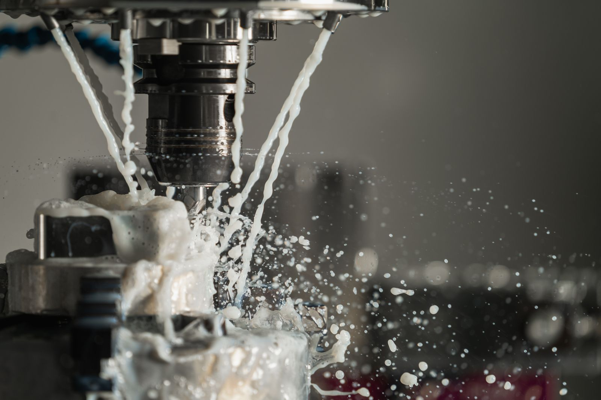
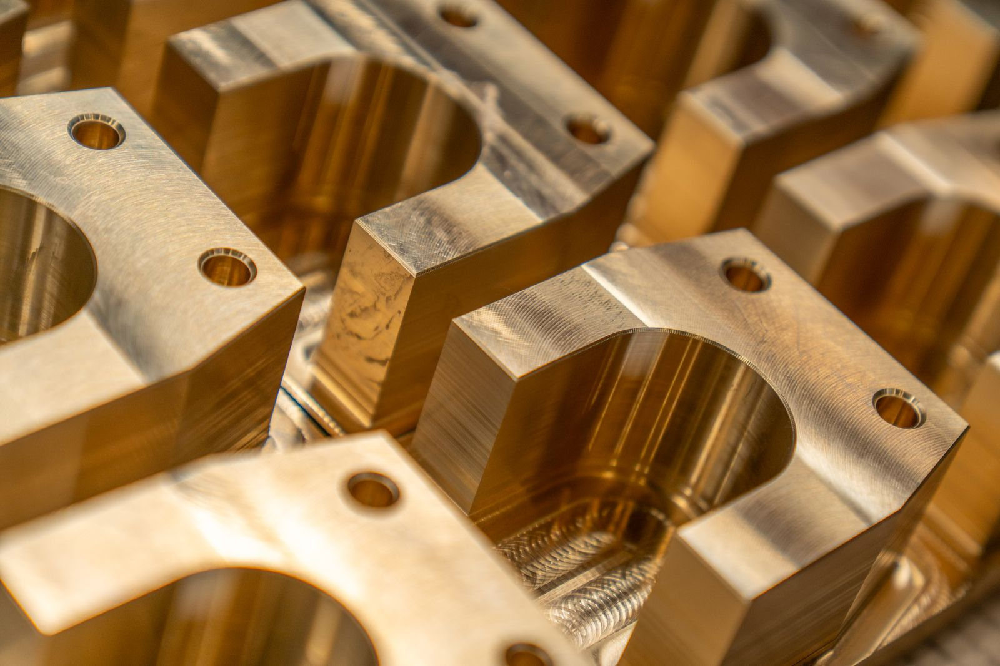

CNC case machining · Grenchen
A watch case is a pressure vessel for time. Mine are machined like one.
I machine watch cases from solid Grade 5 titanium billet for independent watchmakers and small brands — prototypes, short runs and hand finishing. The brands I supply do not put my name on their dials. This sheet is where the work is signed: every tolerance printed here is a measured value, with the table it came from.

Measured, not adjectives
A tolerance on this page is a process record, not a promise typed into a brochure. Table T1 states the tightest band this shop holds in repeat production, by case class, taken from the inspection records of the last three years. Anything tighter is outside the table, and the planner below will tell you so to your face.
| Case class | Features covered | Floor | Basis |
|---|---|---|---|
| R — Round three-hand | Diameters, caseback seat, crown bore | ±0.005 mm | Every case measured; records 2023–2026 |
| C — Chronograph | Diameters, crown and pusher bores | ±0.005 mm | Diameters every case; bores sampled 1 in 5 |
| S — Shaped / tonneau | Form surfaces, diameters | ±0.008 mm | Form milling holds a wider band; stated plainly |
How inspection works. Measurement happens at 20 °C on calibrated instruments. Case diameters and the caseback seat are measured on every case, micrometer and bore gauge. Remaining features are sampled one case in five on the coordinate measuring machine. Each run ships with a measurement sheet listing the values per case — the client checks our numbers against their own instruments, and several do.
Anyone can print ±0.002 mm on a certificate. This shop prints what the micrometer said, and prints the floor it cannot beat next to the floor it can.
The operation sheet
Three tables run this shop: what a case costs in minutes, what it costs in hand-finishing, and what it costs in metal. The planner in §03 reads these same tables — the figures on the page and the figures in the tool are one set of numbers.
| Case class | Milling | Turning | Drilling & tapping | Subtotal |
|---|---|---|---|---|
| R — Round three-hand, 39 mm | 38 | 14 | 9 | 61 |
| C — Chronograph, 42 mm | 52 | 16 | 21 | 89 |
| S — Shaped / tonneau | 74 | 18 | 15 | 107 |
| Finish | Hand minutes | Character |
|---|---|---|
| Brushed | 22 | Grain along the caseband; can be re-brushed after a knock |
| Bead-blasted | 12 | Even matte; hides handling marks; a local repair means blasting the whole case again |
| Mixed — brushed with polished bevels | 38 | Two finishes, one case; the bevels are polished by hand, one edge at a time |
| Polished | 55 | Full mirror by hand; shows every handling mark within a week of wear |
| Case class | Billet blank | Finished case | Leaves as swarf |
|---|---|---|---|
| R — Round | 148 g | 41 g | 107 g |
| C — Chronograph | 186 g | 58 g | 128 g |
| S — Shaped | 214 g | 63 g | 151 g |
Roughly seven tenths of every billet leaves the shop as swarf and is sold back as scrap titanium. The client pays for the blank that was started, because the blank is what the case was cut from. Titanium also eats tools: an end mill that lasts a week in steel lasts about a day here. Tool wear sits inside the rate in Table P1 — it never arrives as a surprise line on an invoice.

Price the run before we talk
The price basis is printed first, because a calculator without its basis is a guess wearing a suit. Both tools below read Tables O1, F1, M1, Q1 and P1 on this page.
| Line | Rate | Covers |
|---|---|---|
| Machine + bench rate | CHF 2.40 / min | Machine time, tooling wear, bench labour, inspection |
| Grade 5 billet | CHF 0.42 / g | Charged per blank started, scrap allowance included |
| Setup & programming — Class R | CHF 480 / run | Once per run, however many cases follow |
| Setup & programming — Class C | CHF 640 / run | Pusher and crown work adds programming time |
| Setup & programming — Class S | CHF 820 / run | Form toolpaths are programmed surface by surface |
| Case class | Allowance | Applied as |
|---|---|---|
| R — Round | 3% | Of blanks started, rounded up — a fraction of a case cannot be scrapped |
| C — Chronograph | 5% | Pusher bores are the usual loss point |
| S — Shaped | 8% | Form surfaces drift first; see Case File 02 |
Case Run Planner
Set the class, the run size, the finish and the tolerance you want. The arithmetic prints line by line, from the tables above. Ask for a tolerance tighter than the class floor and the planner prices the floor instead — and says so.
| Line | Working | Amount |
|---|---|---|
| Blanks started | — | — |
| Cycle time | — | — |
| Machining & finishing | — | — |
| Material | — | — |
| Setup & programming | — | — |
| Run total | Sum of the lines above | — |
| Per delivered case | — | — |
—
—
| Item | Price | Includes |
|---|---|---|
| Prototype — Class R | CHF 1,450 | One blank, brushed finish, measurement summary |
| Prototype — Class C | CHF 1,900 | One blank, brushed finish, measurement summary |
| Prototype — Class S | CHF 2,600 | One blank, brushed finish, measurement summary |
| Full measurement report | + CHF 180 | Per prototype: every feature, CMM record, signed sheet |
| Polished finish on a prototype | + CHF 240 | Per prototype, in place of brushed (Table F1 hand time) |
Prototype Estimator
Most commissions start here: one case, in the hand, measured. Prices from Table E1, printed as lines.
| Line | Working | Amount |
|---|
Both tools give the shape of a price from the printed tables. A quote is written per commission and states the agreed tolerances and the measurement method before any money moves — see About & terms.
What the shop takes on
Clients are confidential by default: the register describes case types and counts, and names a brand only where the client has consented in writing. One has. What moves the price is printed in §03 — cycle minutes first (class and finish), then metal per blank started, then setup spread across the run. A ten-piece run carries the same setup as a hundred-piece run would spread thinner; the planner shows it per case so the arithmetic is visible before we talk.
“The cases arrived with a measurement sheet I could check against my own micrometer. Three cases in forty sat near the edge of the band; none sat outside it. That is the whole review.”
Counted, in the shop's own units
One path from here: the enquiry sheet, or write to cases@feldmann-caseworks.example. Both reach the same bench, and the reply states tolerances and measurement method before it states a date.